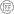

<footer class="footer-main">
  {{ site.name }} © {{ site.time | date: '%Y' }} <a class="link"
    href="{{ site.url }}/feed.xml" target="_blank"><svg class="icon icon-rss">
      <use xlink:href="#icon-rss"></use>
    </svg></a>
</footer>